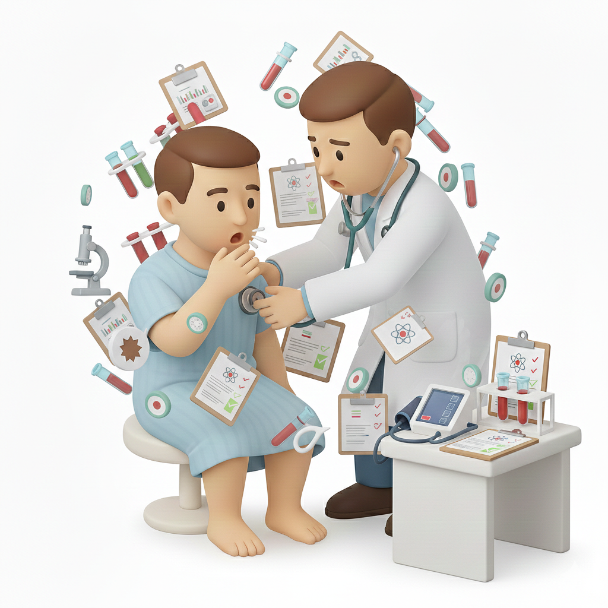
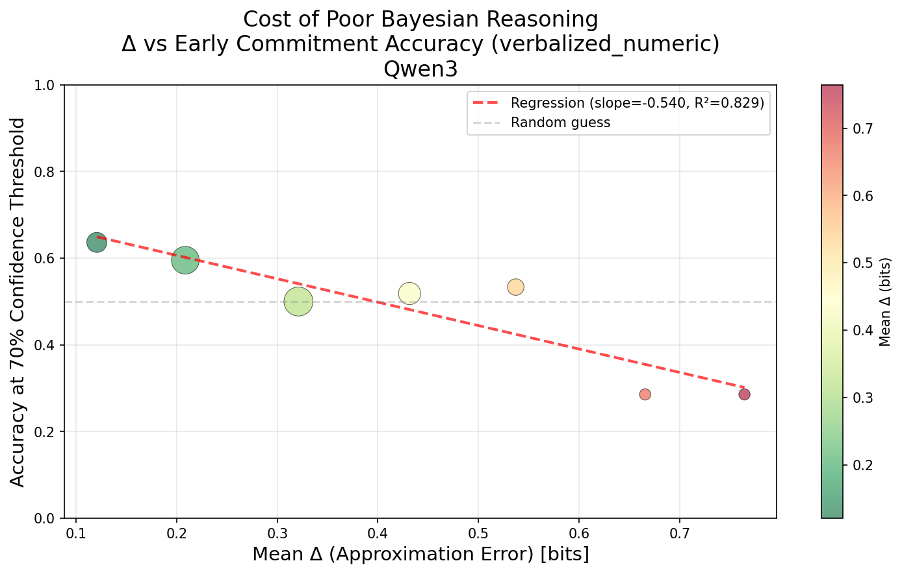
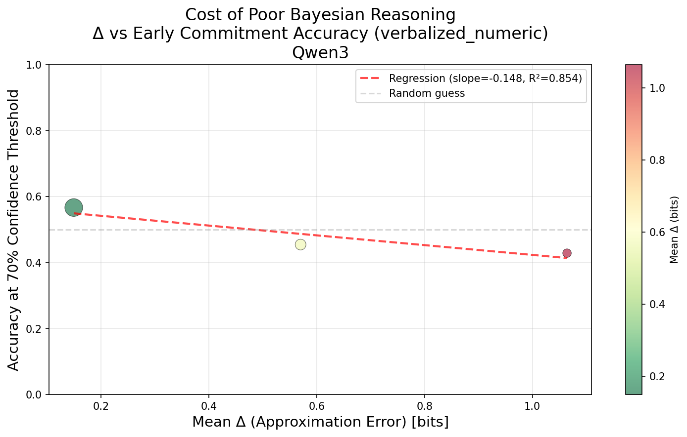
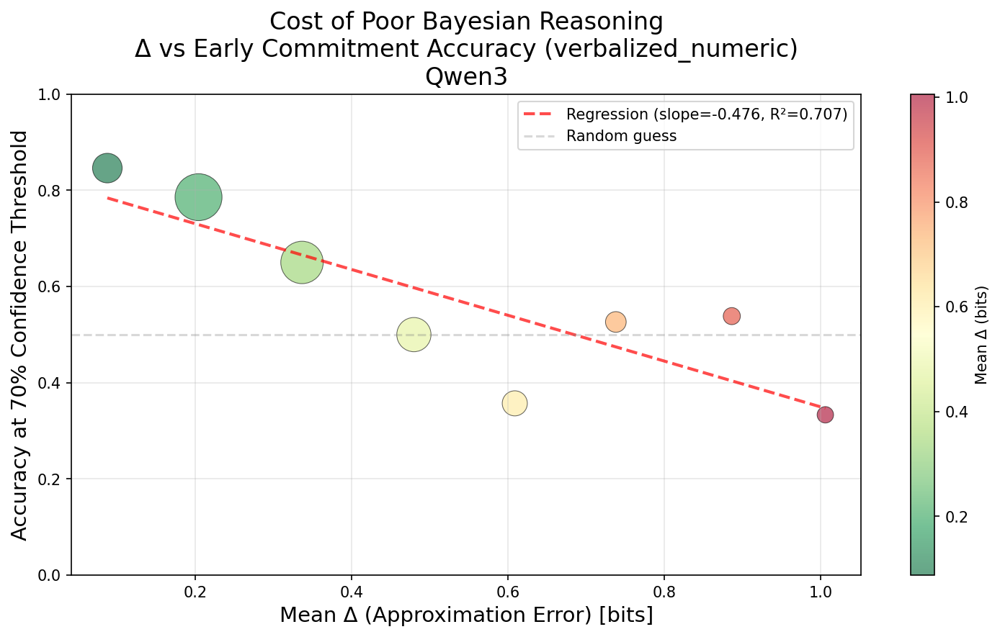
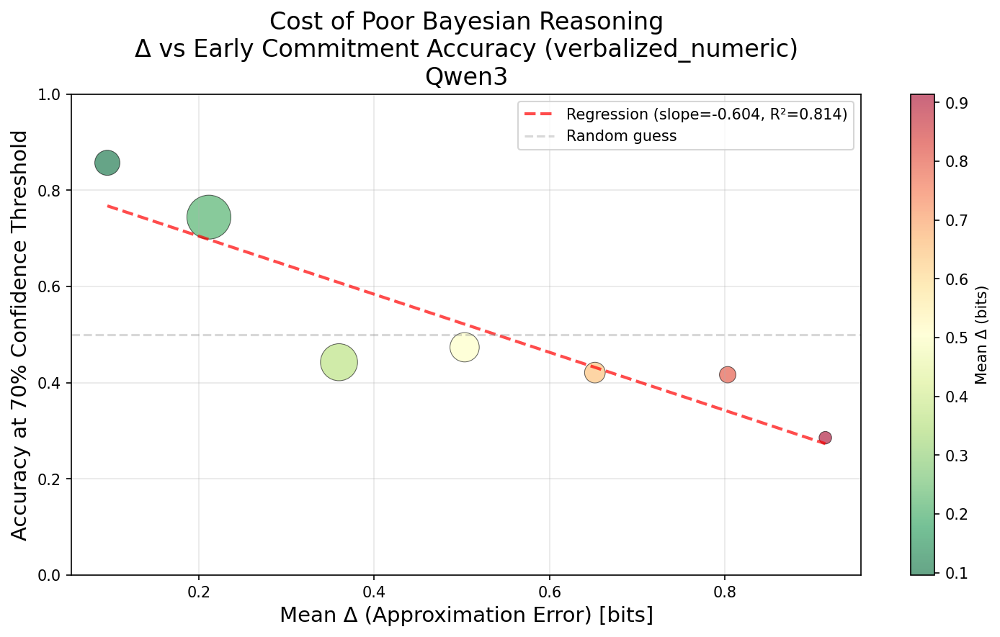
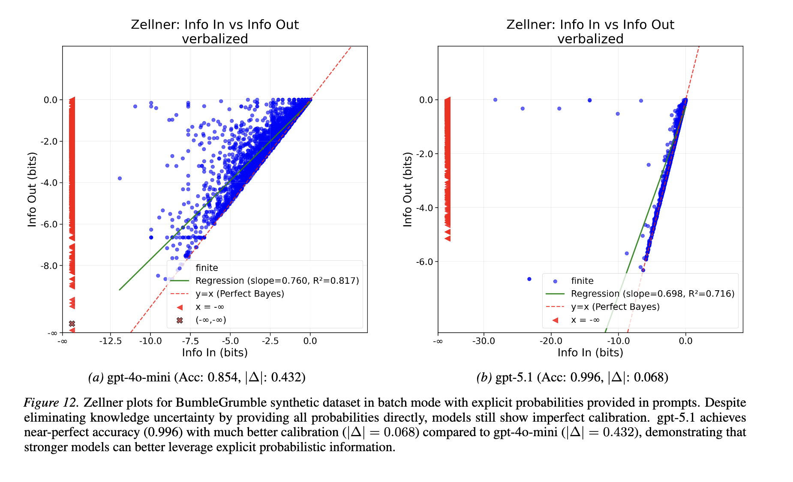

Measuring and Improving LLM Capabilities
Measuring reasoning quality with Zellner’s Δ — can agents update beliefs proportionally to evidence?
Building robust reward functions, safety gates, and calibration pipelines — evaluation pipelines.
All evidence is given at once in a single prompt. The model answers. We score right/wrong.
But a real doctor gathers evidence one step at a time — each result informs what to check next.
In the real world, evidence is almost always incomplete. It is crucial to maintain calibrated confidence over all outcomes at every step — not just get the right answer at the end. Current evaluations hide this failure.
How does the model update its beliefs over all hypotheses as evidence arrives?
A patient reports chest pain. Each doctor receives lab results one at a time. How do they update their beliefs?
Hears "chest pain" → "Heart attack!" (95%)
Orders no lab tests
Jumps to conclusion without gathering evidence

Sees all lab results → "Maybe heartburn?" (50%)
Has all the evidence, still won't commit
Chest pain → lab test 1 → lab test 2 → "Heart attack" (90%)
Updates beliefs proportionally to each piece of evidence
Belief updates should be proportional to evidence strength — no more, no less.
A patient reports chest pain. The doctor orders lab tests one at a time. What is the diagnosis?
At each step we estimate the likelihood (what does this evidence suggest?) then update the prediction. The model over-updates on "chest pain," locks onto A) Heartburn at 92%, then abruptly reverses to B) Heart Attack. Both end up correct — but the model's path was erratic.
Final accuracy masks reasoning failures. Real-world agents must make decisions under partial evidence. A model with erratic intermediate reasoning cannot do this reliably, even if it gets the right answer when given everything at once.
We want to quantify: did the model update proportionally to evidence strength?
Zellner's insight: compare how much the prediction moved vs. how strong the evidence was.
Formally:
beliefs before new clue
how likely is clue under each hypothesis
beliefs after new clue
Prior (after chest pain):
A = Heartburn B = Heart Attack
New evidence: elevated troponin
Bayesian posterior:
Over-updating model:
Bayesian (q = Bayes posterior):
Over-updating model (q = model output):
The model moved more than the evidence warranted — it shifted 0.81 nats but the evidence only justified 0.72. The excess Δ = 0.09 is the over-reaction.
A model can be accurate but have high Δ — right answer through erratic reasoning.
A model can be calibrated but have high Δ — reliable endpoint, wild path.
Only Δ measures whether the process is sound — a gap in current evaluations.
| Dataset | Datapoints | Options | Steps | Calls / model |
|---|---|---|---|---|
| AWA | 500 | 4 | variable | 298K |
| BumbleGrumble | 500 | 4 | variable | 298K |
| GPQA Diamond | 131 | 4 | variable | 78K |
| MediQ | 494 | 4–10 | variable | 119K |
| MedPAIR | 500 | 4–10 | variable | 238K |
Why so many calls? At each evidence step we elicit 3 quantities (prior, posterior, likelihood) using 3 UQ methods (verbalized numeric, logit-based, sample-based), across 2 modes (batch + sequential) × 10 samples. Even modest datasets require ~300K calls per model.
Batch mode, verbalized numeric. Zellner's |Δ| measures deviation from optimal — 0 = perfect Bayesian reasoning.
| Model | AWA | GPQA | MediQ | MedPair | Avg |Δ| | Acc (full evidence) |
|---|---|---|---|---|---|---|
| Closed Source | ||||||
| GPT-4o-mini | 0.15 | 0.21 | 0.19 | 0.18 | 0.18 | 66% |
| GPT-5.1 | 0.08 | 0.22 | 0.13 | 0.17 | 0.15 | 87% |
| Open Source — Standard | ||||||
| Qwen3-8B | 0.18 | 0.33 | 0.23 | 0.23 | 0.24 | 63% |
| Qwen3-14B | 0.10 | 0.17 | 0.15 | 0.16 | 0.15 | 66% |
| Ministral-8B | 0.23 | 0.30 | 0.23 | 0.22 | 0.25 | 59% |
| Ministral-14B | 0.27 | 0.33 | 0.25 | 0.23 | 0.27 | 61% |
| Open Source — Reasoning | ||||||
| DeepSeek-R1-Distill-Qwen-8B | 0.11 | 0.20 | 0.10 | 0.10 | 0.13 | 70% |
| Ministral-8B-R | 0.17 | 0.28 | 0.18 | 0.17 | 0.20 | 67% |
| Ministral-14B-R | 0.15 | 0.26 | 0.16 | 0.18 | 0.19 | 70% |
🚩 Accuracy can't distinguish: DeepSeek-R1-Distill-Qwen-8B & Ministral-14B-R both score 70% — but |Δ| reveals DeepSeek reasons far more optimally (0.13 vs 0.19)
🧠 Reasoning training helps both: Qwen3-8B (|Δ| 0.24, 63%) → DeepSeek-R1-Distill-Qwen-8B (|Δ| 0.13, 70%) — better reasoning quality and higher accuracy
In practice, reasoners decide once confidence crosses a threshold — they rarely see all evidence. Current evaluations mask this by only measuring the final step.
Standard accuracy hides reasoning brittleness — models look reliable after seeing all evidence. But poor reasoning causes real errors when models must decide under uncertainty.




Right destination, unreliable path. LLMs can be accurate but have high Δ. Accuracy masks process failures — but Zellner's Delta flags them.
BumbleGrumble: A synthetic task where all probabilities are given explicitly in the prompt — removing knowledge uncertainty entirely.

When models have perfect understanding of the problem, they can reason near-optimally. The gap in real tasks comes from knowledge uncertainty, not inability to do Bayesian math.
Sample traces from GPT-5.1 reasoning, filter by mean |Δ|, fine-tune a smaller model:
Result: Fine-tuned Qwen3-8B shows improved |Δ| without sacrificing accuracy — models can learn to reason more optimally.
Results for Qwen3-8B with |Δ| regularization (verbalized numeric, batch mode):
| Dataset | Domain | Before Acc |
Before |Δ| |
→ | After Acc |
After |Δ| |
|---|---|---|---|---|---|---|
| Synthetic | ||||||
| AWA | synthetic | 73% | 0.18 | → | ~98% | ≈0.01 |
| BumbleGrumble | synthetic | 89% | 0.36 | → | ~99% | ≈0.02 |
| Real-World | ||||||
| GPQA Diamond | science | 46% | 0.33 | → | ~49% | ~0.25 |
| MediQ | clinical | 71% | 0.23 | → | ~74% | ~0.17 |
| MedPair | clinical | 60% | 0.23 | → | ~64% | ~0.17 |
Synthetic benchmarks reach near-perfect |Δ| and accuracy — the bottleneck is knowledge, not reasoning ability. Real-world gains are bounded by domain expertise, but even conservative |Δ| reduction translates to meaningful accuracy improvement.
MediQ = CraftMD + MedQA-dev | MedPair = JAMA + MedBullets + MedXpert + MMLU-Med.
Compute: 8× A100 GPUs | 450 training samples (50 from GPQA, 100 from each other dataset) | Fine-tuning Qwen3-8B
Add |Δ| penalty to standard LM loss:
Sample traces from a strong model, filter by |Δ|, fine-tune a small model:
Reward = accuracy + low |Δ|:
All three methods use |Δ| as the training signal — the key insight is that reasoning quality is now a trainable objective, not just a post-hoc metric.
A model that arrives at the correct diagnosis but ignores contradictory evidence along the way will eventually fail — in a new patient, a harder case, or a higher-stakes decision.
Zellner's Δ audits every step of the reasoning path
LLMs over-update, under-update, and reverse-update
Post-training with Δ-filtered traces improves reasoning quality
Accuracy measures where you end up. Zellner's Δ measures how you got there.
For LLMs to be trustworthy decision agents, we need both.
General-purpose models underperform on specialized, safety-critical queries. I built a synthetic data generation pipeline for post-training — from prompt mixture design through reward function engineering to ablation-driven validation.
The hard part wasn’t the RL — it was designing diverse prompt mixtures, deriving evaluation dimensions from expert data, and building reward functions for a domain where correctness is nuanced.
A generalizable framework — designed for health & wellness, but the methodology transfers to any specialized domain.
Multi-dimensional taxonomy from user data → conditional hierarchical sampling → LLM-generated queries → filtering & reweighting
7 fixed evaluation dimensions derived from 1,000 expert-annotated pairs. Verifiable signals + structured multi-criteria scoring.
Proxy model (~7–8B) ablations on reward & mixture design, calibrated against expert evaluations on held-out set
Query filtering criteria: learnable (model doesn’t already ace it), challenging (not trivially solvable), unambiguous (actionable, not vague).
Ensure diversity and coverage via a multi-dimensional annotation taxonomy derived from user query logs.
| Dimension | Values | Sampling |
|---|---|---|
| Topic | nutrition, fitness, mental wellness, sleep, chronic conditions, preventive care | ~ Categorical |
| Query Type | factual lookup, personalized plan, safety-critical | | Topic |
| Difficulty | simple · moderate (user context) · hard (multiple considerations) | | Topic, QType |
| Risk Level | low (wellness tips) · medium (supplements) · high (medication interactions) | | Topic, QType, Diff |
Conditional hierarchical sampling — each layer conditions on previous; tables estimated from user logs. More data-efficient than flat joint over all cells.
This is a largely non-verifiable domain — answers aren’t binary like math or code. All 7 dimensions scored by a previous-gen flagship LLM-as-judge, with Safety as a hard gate.
| Dimension | Scoring | Description |
|---|---|---|
| Safety | binary · hard-gate | Fail → reward floored to 0. Disclaimers, no dangerous dosages, physician referral |
| Factual Accuracy | binary | Claims correct per established guidelines; grounded in expert reference when available |
| Completeness | 1–3 | Missing key info / partial / thorough coverage |
| Personalization | 1–3 | Generic / somewhat tailored / well-personalized to user context |
| Actionability | binary | Provides concrete, followable steps |
| Appropriate Caveats | binary | Acknowledges limitations, individual variation, when to seek professional help |
| Empathy & Tone | 1–3 | Cold / neutral / warm and supportive |
Discovery: 1,000 expert pairs → cluster recurring quality criteria → 7 stable dimensions
Aggregation: ∑(w_d · s_d) / ∑(w_d) — renormalized over available dimensions
Single LLM judge scores all dimensions — previous-gen flagship to avoid self-judging circularity
Recent work (Scale AI’s RaR, CMU’s RLCF) generates per-query rubrics at training time. We chose fixed expert-derived dimensions for open-ended health queries.
Core insight: For fuzzy queries like “I’ve been eating carrots a lot, any tips?” — a rubric generator needs to know carotenemia is the key risk, essentially solving the problem to write the rubric. The “verification is easier than generation” principle breaks down. Fixed dimensions sidestep this entirely.
Dimensions derived from expert data — so we cannot validate on the same data. Split: 700 pairs for dimension discovery, 300 held out for calibration.
Split 1,000 gold pairs → 700 discovery / 300 held-out
Derive 7 dimensions + initial weights from 700 pairs
Offline validation on 300 held-out — score gold vs. degraded versions, pick best weight config
Pairwise preference on 50–100 new model outputs — rubric predicts winner vs. expert pick
Disagreement analysis on 20–30 worst cases — experts explain why, reveals missing dimensions
Step 3 is free — uses existing data, eliminates bad configs early
Step 4 is efficient — pairwise comparison has higher inter-annotator agreement than absolute scoring
Step 5 extracts max learning — tells you what’s wrong, not just how wrong
All ablations on a ~7–8B proxy model to iterate quickly before committing to full-scale training.
Fixed expert-derived dimensions provided more consistent and reliable reward signal than dynamic per-query rubric generation — especially for open-ended health queries where dynamic generators struggled. Structured multi-criteria scoring (binary + 1–3) outperformed both generic Likert-style baselines and pure binary approaches.
Thank you! — I’d love to discuss how these ideas connect to the challenges you’re seeing at Scale.